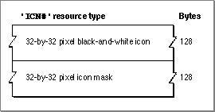

Legacy Document
Important: The information in this document is obsolete and should not be used for new development.
Important: The information in this document is obsolete and should not be used for new development.


The Icon List Resource
An icon list resource is one of several icon resources that you create to represent visually for the user your application or one of the document types it creates. An icon list resource is a resource with the resource type'ICN#'. All icon list resources must be marked purgeable, and they must have resource IDs greater than 128.When the user chooses by Icon from the View menu, the Finder displays the black-and- white icon specified in this resource in windows if either the user has a black-and-white monitor or your application has not defined any resources for color icons; otherwise, the Finder displays a color version of the icon.
An icon list resource is defined to be an array of two items of type
String[128]; each bit in the first array represents a pixel in the 32-by-32 pixel icon, and each bit in the second array represents a pixel in the 32-by-32 pixel mask. You can use a high-level tool such as the ResEdit application, which is available through APDA, to create icon list resources. You can then use the DeRez decompiler to convert your icon list resources into Rez input when necessary. See "Creating Icons for the Finder" beginning on page 7-10 for additional information about creating icon list resources and other resources for representing files to users.An icon list resource defines one icon, which the Finder uses to display the file it represents. If you examine the compiled version of an icon list resource, as represented in Figure 7-17, you find that it contains the following elements:
Figure 7-17 Structure of a compiled icon list (
- The 32-by-32 pixel black-and-white icon.
- The 32-by-32 pixel black icon mask, which shows the area covered by the black-and- white icon and any 32-by-32 pixel color versions of the icon. The Finder uses the mask to crop the icon's outline into whatever background color or pattern is on the desktop. The Finder then draws the black-and-white icon specified in this resource--or the color icons specified in large 4-bit color icon resources or large 8-bit color icon resources--into this shape.
'ICN#') resource
To create 16-by-16 pixel and color versions of the icon defined in an icon list resource (thereby supplying an entire icon family), your application must also create the following resources: a small icon list resource, a large 4-bit color icon resource, a small 4-bit color icon resource, a large 8-bit color icon resource, and a small 8-bit color icon resource. Their compiled formats are described in the next several sections; guidelines for creating them are provided in "Creating Icons for the Finder" beginning on page 7-10.